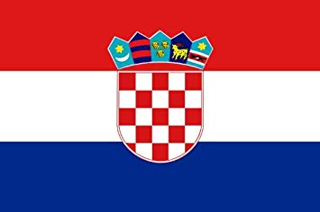
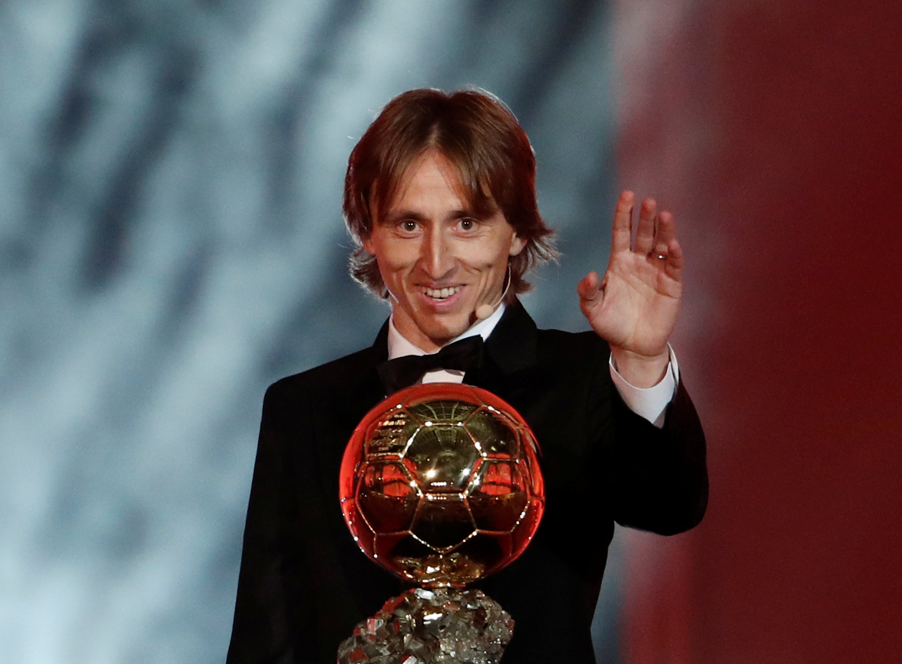
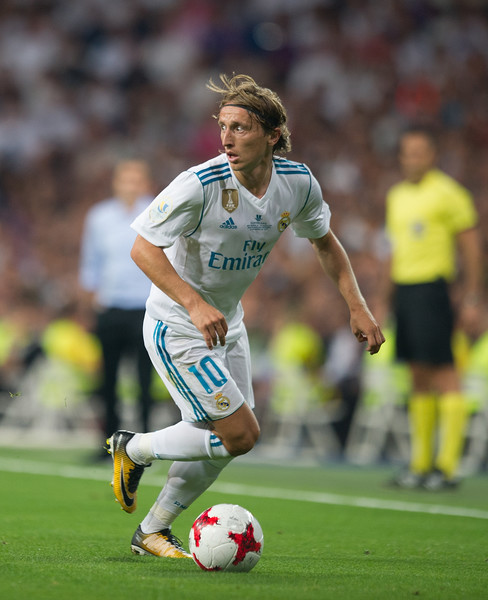
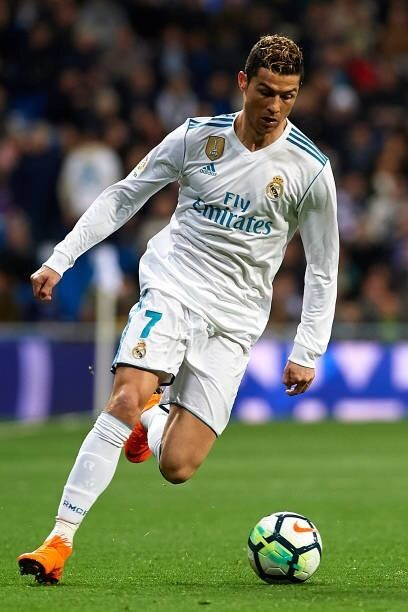

 Luka MODRIC - 2018

- La série Ronaldo/Messi est enfin brisée
Auteur d'une saison remarquable, le trop souvent sous côté
Luka Modric
, remporte le ballon d'or 2018, succédant aux deux des plus grands joueurs de l'histoire, sans aucun doute.
Nationalité : Croate
Né le 9 septembre 1985, à Zadar (Yougoslavie)
Taille : 1,72
Poids : 66 kg
Poste : milieu
Clubs : Dinamo Zagreb (2003-2008), Tottenham Hotspur (2008-2012), Real Madrid (depuis 2012)
Palmarès : Championnat de Croatie (2006,2007,2008), Coupe de Croatie (2007,2008), Supercoupe de Croatie (2006), Championnat d'Espagne (2017), Ligue des champions (2014,2016,2017,2018), Coupe du monde des clubs (2014,2016,2017,2018), Supercoupe d'Espagne (2012,2017), Coupe d'Espagne(2014), Supercoupe de l'UEFA (2014,2016,2017), Coupe du monde (Finaliste 2018)
Bilan en club : 616 matchs, 78 buts
Bilan en équipe de Croatie : 115 sélections A, 14 buts
Bilan en phase finale de Coupe du monde : 2 participations (2006, 2010), 10 matches, 2 buts.
Palmarès Ballon d'Or : vainqueur en 2018
Classement du Ballon d’Or France Football 2018 :

Luka Modric (Croatie / Real Madrid)

Cristiano Ronaldo (Portugal / Real Madrid)
Antoine Griezmann (France / Atlético de Madrid)
Retour à l'accueil